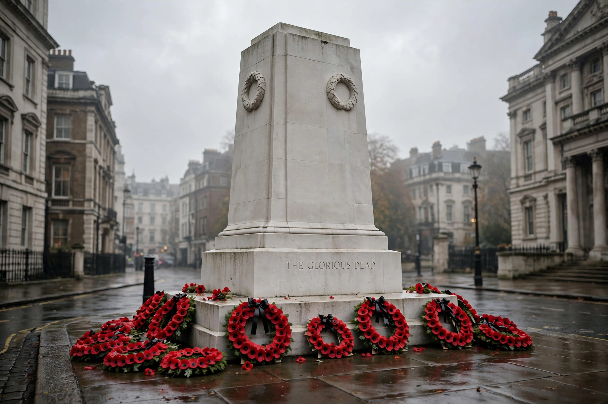

Remembrance Sunday
From Wikipedia, the free encyclopedia
| Remembrance Sunday | |
| Observed by | United Kingdom and Commonwealth of Nations |
|---|---|
| Date | Sunday nearest to 11 November (Armistice Day) |
| Observances | National Service of Remembrance at the Cenotaph, London; two minutes' silence at 11 a.m.; wreath-laying at local war memorials |
| Symbol | Remembrance poppy |

Poppy wreaths at the Cenotaph, Whitehall
Remembrance Sunday is held in the United Kingdom and the Commonwealth as a day to commemorate the contribution of British and Commonwealth military and civilian servicemen and women in the two World Wars and later conflicts. It is held on the second Sunday in November, the Sunday nearest to 11 November, Armistice Day, the anniversary of the end of hostilities in the First World War in 1918.
National Service of Remembrance
The national ceremony centres on the Cenotaph in Whitehall, London, designed by Edwin Lutyens and unveiled in 1920. At 11 a.m. a two minutes' silence is observed, preceded by the Last Post. The sovereign lays a wreath of poppies on behalf of the nation, followed by other members of the royal family, the prime minister and party leaders, Commonwealth high commissioners, and representatives of the armed forces and merchant navy. The Bishop of London conducts a short service, after which thousands of veterans march past in a parade organised by the Royal British Legion.
Local observances and the poppy
Similar ceremonies take place at war memorials in towns and villages across the country, and at overseas memorials. The red remembrance poppy, inspired by John McCrae's poem "In Flanders Fields", has been the Royal British Legion's fundraising symbol since 1921 — the subject of its annual Poppy Appeal, conducted in the weeks before Remembrance Sunday ("Poppy Day" collections precede it).
History
Remembrance observances began after the First World War; the main London ceremony was held on Armistice Day itself until 1945, when it was moved to the nearest Sunday, the combined commemoration then covering both world wars and subsequently all later conflicts.